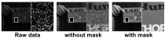

Quanta image sensors, such as SPAD arrays, are an emerging sensor technology, producing 1-bit arrays representing photon detection events over exposures as short as a few nanoseconds. In practice, raw data are post-processed using heavy spatiotemporal binning to create more useful and interpretable images at the cost of degrading spatiotemporal resolution. In this work, we propose bit2bit, a new method for reconstructing high-quality image stacks at the original spatiotemporal resolution from sparse binary quanta image data. Inspired by recent work on Poisson denoising, we developed an algorithm that creates a dense image sequence from sparse binary photon data by predicting the photon arrival location probability distribution. However, due to the binary nature of the data, we show that the assumption of a Poisson distribution is inadequate. Instead, we model the process with a Bernoulli lattice process from the truncated Poisson. This leads to the proposal of a novel self-supervised solution based on a masked loss function. We evaluate our method using both simulated and real data. On simulated data from a conventional video, we achieve 34.35 mean PSNR with extremely photon-sparse binary input (less than 0.06 photons per pixel per frame). We also present a novel dataset containing a wide range of real SPAD high-speed videos under various challenging imaging conditions. The scenes cover strong/weak ambient light, strong motion, ultra-fast events, etc., which will be made available to the community, on which we demonstrate the promise of our approach. Both reconstruction quality and throughput substantially surpass the state-of-the-art methods (e.g., Quanta Burst Photography (QBP)). Our approach significantly enhances the visualization and usability of the data, enabling the application of existing analysis techniques.
single photon avalanche diode (SPAD) is a highly sensitive photodetector that operates above its breakdown voltage, allowing it to detect individual photons by triggering a self-sustaining avalanche current when a single photon hits the device. SPADs have evolved significantly since their early development, particularly with CMOS implementation in the early 2000s, and are now used in various applications including LIDAR, PET scanning, fluorescence lifetime microscopy, and quantum key distribution, with recent advances achieving higher fill factors, lower noise, and integration into arrays with over 1 million pixels.
The process of quanta image generation is shown above. A continuous signal in spacetime generates photons according to a Poisson process, where the rate parameter λ is proportional to the signal intensity. These photons are then detected by the SPAD array with a certain quantum efficiency, producing binary measurements that indicate whether at least one photon was detected during each exposure period. For a more detailed discussion of this process, please refer to the very nice review by Dr. Stanley Chan.
Generative accumulation of photons has shown promise in reconstructing high-quality images from extremely noisy photon counting data by using binomial sampling to create training pairs. However, the binary nature of SPAD data makes the Poisson distribution assumption inadequate. The process is modeled using a Bernoulli lattice process derived from truncated Poisson distribution. The splitting process creates complementary pixel dependencies, leading to significant reconstruction artifacts as shown in the figure below.
We show that by masking the complementary pixels in the loss computation, we can eliminate the reconstruction artifacts and generalize the method for extremely photon sparse 1-bit data.
@inproceedings{
liu2024bitbit,
title={bit2bit: 1-bit quanta video reconstruction via self-supervised photon prediction},
author={Yehe Liu and Alexander Krull and Hector Basevi and Ales Leonardis and Michael W. Jenkins},
booktitle={The Thirty-eighth Annual Conference on Neural Information Processing Systems},
year={2024},
url={https://openreview.net/forum?id=HtlfNbyfOn}
}